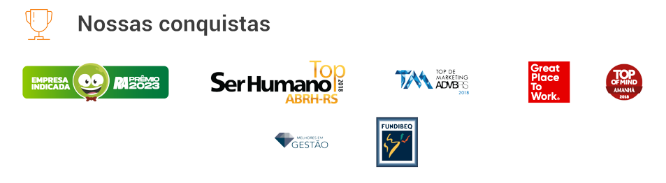

Nossos eventos
04 ago Saúde Ocupacional em Foco - Desvendando a Especialização Técnica em Enfermagem do Trabalho Escola Senac Santana do Livramento
09 ago A influência do TikTok nas vendas Av. Pedro Adams Filho, 5757, 10º andar, Sala 1005, Centro - Novo Hamburgo
26 jul Marketing Digital, a fórmula infalível Av. Pedro Adams Filho, 5757, 10º andar, Sala 1004, Centro - Novo Hamburgo. 31 jul Descomplicando o Corte e Costura Rua Bento Gonçalves, 1537, Centro - Novo Hamburgo Depoimentos
DESIGN "O melhor investimento que podia ter feito para o meu futuro foi começar o Curso Técnico em Design de Interiores, já que, por conta da praticidade do EAD, consegui conciliar ele com o Ensino Médio. Comecei a estagiar antes mesmo de terminar o curso e hoje, além de eu ter uma profissão, fui efetivada no escritório onde consegui meu primeiro estágio, saindo do colégio direto para o mercado de trabalho." Técnico em Design de Interiores – EAD
MARKET.DIGITAL.MÍDIAS.SOCIAIS Encontrei no curso exatamente o que eu estava procurando: aulas de alta qualidade. O professor, sem dúvidas, é especialista em marketing e foi capaz de compartilhar muito do seu conhecimento com os alunos. Eu já tinha um pouco de noção sobre o assunto, mas, definitivamente, o curso conseguiu expandir a minha visão sobre o que, de fato, Marketing significa. Vejo o curso como um coringa para todos que querem empreender e se mostra útil em muitos aspectos, extrapolando o simples entendimento de como as redes sociais funcionam.
Faculdade Senac oferece oficinas de férias gratuitas.
Ainda dá tempo de se inscrever nas oficinas de férias gratuitas oferecidas pela Faculdade Senac. A instituição está com vagas abertas nas áreas de Design de Moda e Estética. Com uma abordagem prática e teórica, os encontros exploram técnicas e tendências em destaque, permitindo que os participantes ampliem seus conhecimentos e desenvolvam habilidades relevantes para o mercado de trabalho. As inscrições podem ser feitas pelo site http://www6.pe.senac.br/evento/inscricao/index.php. Na área de design de moda, há vagas para a oficina Estamparia Manual com Stencil, que ocorrerá de 25 a 27 de julho. A estamparia é uma técnica utilizada para aplicar desenhos, padrões ou imagens em diferentes tipos de superfícies, como tecidos, papel, cerâmica, entre outros materiais. Essa técnica permite personalizar e decorar produtos, agregando valor estético e diferencial aos mesmos.
A vice-presidente de ensino e educação do SESCON RS, Paula Dahmer, se reuniu hoje na sede do sindicato com as dirigentes do SENAC-RS, Tanyara Vieira, Claudia Mallmann, Luciana Rocha e Crisleine Sturmer, para alinhamento referente ao módulo internacional da pós-graduação em gestão de empresas de serviços, que tem como como objetivo, promover a compreensão das dinâmicas, transformações e inovações tecnológicas no setor contábil em viagem a universidade de Aveiro em Portugal. Fonte: SESCON-RS
